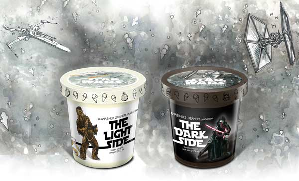
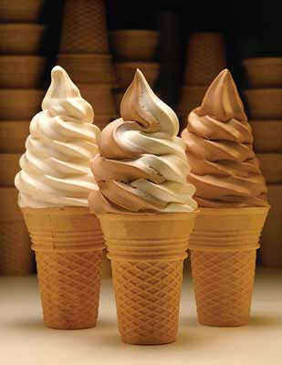
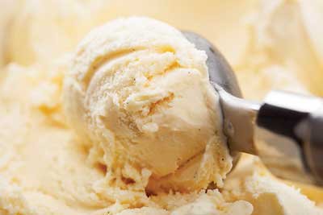
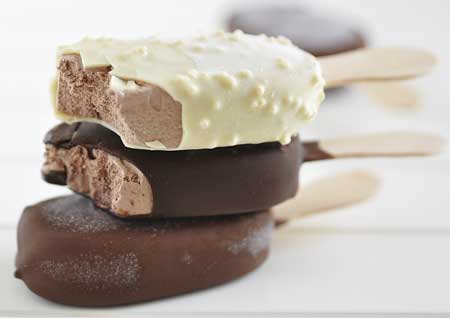

The Inside Scoop on Ice Cream Ingredients
Karen Nachay
Food Technology Magazine
Ice cream is more than a sweet treat. Technically, it is a combination of ingredients that provide thickening, soft gelling, and thin film formation to produce a frozen product with both fat dispersed in water and air dispersed in water emulsions, and a long shelf life, says Donna Klockeman, senior principal food scientist at TIC Gums, White Marsh, Md. (ticgums.com). But you can also think of ice cream as a blank canvas from which manufacturers can formulate products with creative flavors and interesting textures.
Consumers will find such varieties as Green Tea, Toasted Sesame Brittle, and Pineapple Coconut from Häagen-Dazs and Pumpkin Cheesecake, Salted Caramel Brown-ie Ale, and Peach Melba from Ben & Jerry’s. Breyers offers several ice cream varieties made with favorite branded confections like Snickers, Oreo cookies, Heath English toffee, and Girl Scout Cookies Samosas. There’s ice cream, frozen yogurt, and gelato, and products that are lactose-free, gluten-free, reduced-fat, fat-free, and sugar-free. Frozen ice cream novelties come in sandwich and bar forms, on a stick, or in different shapes (i.e., Mickey Mouse–shaped novelties available at Disney Parks), and topped with flavored and colored coatings. Another opportunity for manufacturers to get creative with their ice cream formulations is with limited-time offerings and product tie-ins. Ample Hills Creamery, a privately owned ice cream shop in Brooklyn, in collaboration with Disney Consumer Products, gives a Jedi the chance to choose between the light side and dark side of the force with two limited-edition offerings aligned with the Star Wars: The Force Awakens movie. The Light Side is a marshmallow ice cream with crispie clusters and cocoa crispies while The Dark Side is a dark chocolate ice cream with espresso fudge brownies, cocoa crispies, and white chocolate pearls. Manufacturers can also adjust the texture of the finished product to differentiate the product, creating ice cream that ranges from dense to fluffy to soft (as in soft-serve ice cream). Using fats and protein (from dairy), sweeteners, and stabilizers from various sources, along with any number of colored and flavored inclusions, creates ice cream products in a range of styles and flavors, from nostalgic favorites to new sensory experiences.
Functions of Dairy Ingredients
A wide variety of dairy ingredients, including whole and skim milk, cream, whey protein concentrate, and milk powder, provide the all-important emulsification and texturizing functions to ice cream. Scan the labels of ice cream products and you may even find dairy ingredients like lactose, demineralized whey, and butterfat listed. The first two provide sweet flavor and milk solids-not-fat while the butterfat contributes flavor and mouthfeel and thickening enhancements, explains Susan C.G. Larson, associate researcher at the Center for Dairy Research at the University of Wisconsin–Madison.
The whole milk and heavy cream used in ice cream formulations contribute fat, which is responsible for improving density and developing a smooth texture, along with giving the finished product overall richness. The milk fat content in ice cream can range from 10% to up to 16%. Premium ice creams, which have creamier textures and a very rich taste, have milk fat contents in the upper range. The fat molecules in whole milk are tiny globules suspended in a liquid. On the surface of each globule are the milk proteins casein and whey that have emulsification properties to keep the fat suspended in the liquid. Nonfat dry milk solids also contribute to the overall body and smoothness of ice cream.
In addition to providing functional benefits, dairy ingredients can offer cost benefits to manufacturers. “There is a cost opportunity to using dairy ingredients that is two-fold,” says Larson. “Not only can cost savings occur when formulating is done correctly, but there is an opportunity for improvement in yields through higher overruns.”
The U.S. Dairy Export Council, Arlington, Va. (thinkusadairy.org), offers formulas of popular ice cream and dairy-based frozen products to highlight the functionalities of dairy ingredients. Cream (40% fat) and skim milk powder are each used in both hard-packed ice cream and hard-packed premium ice cream. Cream is used to develop mouthfeel and thicken the ice cream as well as contribute to the color and flavor in these two types of ice cream products, says Larson. Skim milk powder lends emulsifying, water binding, aeration, and foaming functions not only to the two hard-packed ice cream formulas, but to formulas for soft-serve yogurt mix, nonfat ice cream, and soft-serve ice cream dry mix.
In formulas for frozen dairy-based treats made with less fat like soft-serve frozen yogurt or nonfat ice cream, consumers expect the quality and flavor to be as close to traditional ice cream as possible. By using whey ingredients, manufacturers can achieve some of the same functionalities that dairy ingredients with higher amounts of fat would provide (USDEC ). In both of the sample formulas provided by the USDEC, whey protein concentrate forms stable emulsions, binds water, aids in the thickening of the product, provides milk solids-not-fat, and contributes to the overall stability of the system, says Larson. In addition to these, whey protein concentrate has whipping/aeration functions that help stabilize and strengthen air cells, leading to a smooth and creamy texture, according to the USDEC. Whey protein concentrate has protein levels ranging from 34% to 89%. One with 34% protein is used in the soft-serve frozen yogurt formula while another with 80% protein is used in the nonfat ice cream formula. Ingredients like these, especially whey protein concentrates with higher protein levels, can be used to boost the protein content of the finished product, says Larson. (The nonfat ice cream formulated with whey protein concentrate 80% has 9 g of protein/100 g serving.)
Ice cream manufacturers can choose from a number of whey protein ingredients and more to bring the desired creaminess and stability to their products. Within its comprehensive range of whey protein ingredients, Hilmar Ingredients, Hilmar, Calif. (hilmaringredients.com), offers several whey protein concentrate and whey protein isolate ingredients that bring emulsification and improved mouthfeel to ice cream and frozen dairy products. Milk proteins sold under the IdaPro brand from Idaho Milk Products, Jerome, Idaho (idahomilkproducts.com), are used in hard-pack ice cream formulations, where they stabilize the ice cream structure and provide a creamy texture. The milk protein ingredients also give body and mouthfeel to low-fat and nonfat hard-pack ice cream. Finally, Agropur Ingredients, La Crosse, Wis. (agropuringredients.com), manufactures dairy ingredients for ice cream applications under it Cornerstone and Darigen lines. The Cornerstone ingredients are dairy proteins that can replace nonfat dry milk solids, improve resistance to thermal shock and meltdown, and offer emulsion stability that is comparable to skim milk. Darigen is a cost-effective nonfat milk solid ingredient for use in soft-serve ice cream, where it functions as a 1:1 nonfat dry milk replacer.
Stabilizers for Quality and Consistency
It is common practice for food manufacturers to add stabilizers to ice cream formulations, as these ingredients offer several functional benefits to the stability and texture of the product and help ensure quality through the entire processing and manufacturing stream. “One of the biggest challenges is maintaining the quality of the ice cream through shipping and storage,” says Ann Tigges, technical service, dairy, at Cargill, Minneapolis, Minn. (cargill.com). “The frozen transportation system from producer to distribution center to supermarket to consumer freezer can have many points where the ice cream might be defrosted slightly. Every time that happens, the eating quality diminishes a little. The use of quality gums and hydrocolloids helps prevent that decline.” Some of the commonly used stabilizers in ice cream include agar-agar, gums like guar, xanthan, gellan, and locust bean, carrageenan, carboxymethyl cellulose, sodium alginate, and gelatin. Other ingredients like egg yolk, monoglycerides and diglycerides, and polysorbate 80 are emulsifiers, but can be thought of as stabilizers because they stabilize emulsions in ice cream.
Stabilizers contribute to the overall consistency and improve the shelf life of ice cream by helping the product survive heat shock. The ingredients also help control ice crystal growth and improve the texture of ice cream. Small ice crystals result in a smooth and creamy ice cream whereas large crystal sizes give ice cream a coarse and grainy texture. Product formulations, processing, packaging, and distribution channels can influence the texture and stability of ice cream, particularly the consistency in size and number of ice crystals that start off processing with the initial freezing of ice cream, says Klockeman. After the ice cream has fully hardened, changes in temperature affect the size of crystals, she adds. “Even as the product is stored at very low temperatures, there is an equilibrium balance between water and ice.” Knowing that ice crystal formation affects the appearance, texture, and shelf life of ice cream, and that it is important to control the size of ice crystal, ingredient manufacturers have developed gums, fibers, and other similar ingredients to address this. For example, Ingredion’s HYDRO-FI TGC-1100 stabilizer blend helps reduce ice crystallization, improve melting properties, and produce a smooth, creamy texture with improved overrun, explains Ivan Gonzales, marketing director, dairy, at Ingredion, Westchester, Ill. (ingredion.us). This ingredient is composed of tara gum, citrus fiber (dried orange pulp or citrus flour), and guar gum.
Reducing fat or sugar in an ice cream formulation affects several qualities of the product, and this is where stabilizers can contribute functionalities. The texture of ice cream changes, particularly the creaminess, smoothness, and meltdown properties, and these changes affect how different flavors are perceived in the final product, explains Gonzales. When the sugar content is reduced, it changes sweetness perception and affects crystal formation and stability over shelf life, he adds. Ingredion offers a broad range of ingredients suited for formulation in ice cream products with reduced fat or sugar contents. Two that Gonzales notes are N-DULGE CA1 tapioca maltodextrin that provides creaminess and enhanced mouthfeel for low-fat dairy products, and NOVATION 8300 functional native rice starch that provides creaminess and mouthfeel with excellent freeze-thaw stability.
Klockeman explains that TIC Gums’ Nutriloid 7000 boosts soluble dietary fiber levels in ice cream and improves mouthfeel without changing the viscosity of the finished product, while soluble fibers can be added to a formulation to replace total solids in reduced-sugar products. “The balance of thickening, soft gelling, and thin film–forming components in stabilizer blends is often adjusted when either fat, sugar, or both are reduced in frozen desserts,” she says.
Fiberstar’s Citri-Fi functional citrus fiber ingredient provides hydrocolloidal properties in dairy applications like frozen dairy, including ice cream products formulated with reduced amounts of fat. Citri-Fi is produced using a patented, “clean” process that opens up the fiber to create more surface area, and thus, more contact points for water and/or oil, explains Amanda Wagner, food technologist at Fiberstar, River Falls, Wis. (fiberstar.net). “The composition contains intact insoluble and soluble fiber and protein. These unique attributes provide the exceptional water binding and emulsifying stabilization when used in frozen dairy-based desserts. As a result, this functional fiber can be used to reduce the fat content in low-fat ice cream while maintaining the full-fat creamy mouthfeel and retardation in melt time that are often lost when reducing the fat content.” Wagner adds that since Citri-Fi is naturally derived, it can be used in so-called clean label formulations to replace certain hydrocolloids (in the United States, Citri-Fi can be labeled as citrus fiber, dried citrus pulp, or citrus flour).
Clean label in food production is an important concern of consumers as they continue to pressure food manufacturers to shorten ingredient statements and formulate with ingredients that are naturally derived and have easy-to-understand names. “For those who are trying to streamline an ingredient legend, Cargill offers several ingredients that may offer ice cream product developers the right combination of functional and ‘clean,’” says Tigges. “While ‘clean’ is a subjective descriptor, ingredients like locust bean gum, guar gum, and lecithin have enjoyed a very clean connotation for years.”
Locust bean gum, a galactomannan derived from the bean of the locust or carob tree, has been used in foods for thousands of years, says Tigges. “It is one of the premium gums for use in ice cream.” Its branching molecular structure traps and holds water, which helps prevent heat shock. Tigges adds that locust bean gum is typically used in combination with guar gum and carrageenan but can function as an effective texturant on its own by controlling free water in a system and contributing to mouthfeel. Emulsifiers like lecithin help to hold the fat and water portions of a system in place, which is useful for processing efficiencies. “It is very helpful in achieving or controlling overrun, which is a big component in the manufacture of ice cream,” says Tigges. Lecithin is derived from many sources, including sunflower, which is not genetically modified and not considered an allergen. “This is useful in formulas where mono- and diglycerides might not be welcome on the label,” says Tigges.
How Sweeteners Affect Ice Cream
Ice cream is sweet, and we have sugar to thank for that. Sugar also plays another important role in ice cream: to lower the freezing point and prevent the formation of large ice crystals. In ice cream, the smaller the ice crystals, the smoother the ice cream. Granulated sugar is most often used, but dextrose and powdered glucose can be used in combination with granulated sugar. Corn syrup, honey, and maple syrup are used to sweeten ice cream, too. Each sweetener contributes a different intensity of sweet taste and quality of sweetness.
Manufacturers of no-sugar-added and reduced-sugar ice cream require different types of sweeteners that provide sweet taste levels close to sugar, similar functionalities to those of sugar, and the ability to work along with other types of ingredients. In no-sugar-added and reduced-sugar ice cream products, high-intensity sweeteners and sugar alcohols are used. Keep in mind that a challenge in using these sweeteners is their effect on the overall texture of the ice cream product.
“Beyond sweetness, freezing point depression of sugars is essential in manufacturing ice creams,” says Wade Schmelzer, principal scientist at Cargill, Minneapolis, Minn. (cargill.com). He explains that alternative sweeteners to sugar can be used, often with other ingredients, to reduce sugar in ice cream and provide some of the sensory characteristics that sugar supplies. For instance, he says that Zerose erythritol can be used to provide the freezing point depression function of sugar in reduced-sugar ice creams. “Since overall sweetness intensity is an integral part of consumers’ taste expectations, it is frequently coupled with stevia leaf extracts,” he explains. “Adjustments to the texturant system may also be necessary to deliver the desired sensory experience. Using this approach, sugar reductions of up to 25% have been possible, but next-generation stevia sweeteners with improved sweetness dynamics, such as Cargill’s ViaTech products, are creating new opportunities to improve taste and achieve deeper reductions.”
Other sweetener manufacturers feature ingredients for sugar reduction in ice cream. Steviva Ingredients, Portland, Ore. (stevivaingredients.com), promotes one of its stevia-based sweeteners as an option for use in reducing sugar in ice cream and other frozen dairy products. Fructevia is a proprietary blend of SteviaSweet 95/60 stevia extract, which itself is a blend of 95% steviosides and 60% rebaudioside A, fructose, inulin, and magnesium carbonate. Ingredion developed MALTISWEET IC maltitol syrup as a replacement for sucrose and corn syrup solids in no-sugar- added and reduced-sugar ice cream products and ENLITEN Reb A stevia sweetener as a naturally derived high-potency sweetener option, says Gonzales. From Tate & Lyle, Hoffman Estates, Ill. (tateandlyle.com), comes an allulose ingredient called DOLCIA PRIMA. This ingredient, which is made of the monosaccharide allulose, is said to depress the freezing point of ice cream, soft-serve ice cream, and frozen yogurt while providing a smooth texture and balanced sweetness and flavor profile. It also works synergistically with other sweeteners. And because it has 90% fewer calories than sugar and is absorbed by the body but not metabolized, the ingredient is well-suited for formulating ice cream with reduced calories, according to the company.
From Nostalgic Favorites to Flavor Adventure
Ice cream may never fall out of favor as a go-to dessert or special treat, especially as product developers continue to innovate and experiment with a number of ingredients to give consumers new flavor and texture experiences and new ice cream novelties to enjoy. Ice cream flavor will continue to be an area of exploration and development, as manufacturers take inspiration from such diverse areas as ingredients and global cuisine, indulgence, and consumers’ interest in nostalgia as ways to drive innovation in the category. Thick and creamy textures along with inclusions like pieces of brownies, fudge, nuts, seeds, and more up the indulgence factor, while continuing to offer favorite ice cream novelties of consumers’ childhood as a way to connect with them. Incorporating ingredients from global cuisines or those traditionally not used in ice cream has really taken off with specialty ice cream producers and independently owned ice cream shops. Tahini, miso, tea, goat cheese, beer, cereal, tropical fruits, vegetables, floral, and chili peppers are some of the ingredients these ice cream makers have used. Whether you like traditional vanilla or stout-spiked ice cream varieties, or novelties in cones, on sticks, or in sandwich form, there is something for everyone.
Next month’s Ingredients section will feature ingredients for fermented and distilled beverages.
Members Only: Read more about ingredients that are used to formulate ice cream at ift.org. Type the keywords into the search box at the upper right side of the home page.
Trends to Watch
Vanilla, chocolate, and strawberry are top flavors based on new product introductions for ice cream and frozen novelties within the United States, with other flavors like vanilla bean, ginger, cappuccino, and honey gaining in popularity, says Pamela Oscarson, consumer insights manager at FONA International, Geneva, Ill. (fona.com). In addition to this, she explains that there are a few other trends spotted within this category, which she calls health focus, distinctive characteristics, and a savory approach. Healthier food choices, even for foods that are indulgent, are on the minds of many consumers. “Some products are taking a healthier approach, focusing on the healthy halo for an otherwise sinfully indulgent item with new products touting protein content, high in fiber, detox popsicles made with real fruit and vegetables, and hydration benefits from coconut water,” she says. Consumers are also seeing emphasis placed on the types of ingredients used in ice cream. “We are seeing new products flavored with distinctive characteristics and calling out origin such as Amalfi lemon, Aztec chocolate, and Madagascar bourbon vanilla, providing a premium experience to consumers with unique flavor offerings.” Finally, Oscarson mentions that some manufacturers are formulating with savory ingredients to create a special flavor experience. She describes this as “a slight savory approach with products introducing unique flavor combinations like ginger lemongrass sorbets and toasted green tea with hints of toasted brown rice.”
All Chocolate, All the Time
Chocolate—one of the top favorite ice cream flavors—is quite versatile as an ingredient. Laura Bergan, director of innovation and market development at Barry Callebaut, Chicago, Ill. (barry-callebaut.com), offers some suggestions on how manufacturers can use chocolate ingredients to give chocolate ice cream lovers interesting ways to get their chocolate fix, and pair other ingredients with chocolate ice cream for interesting flavor and texture experiences.
“One way ice cream manufacturers can differentiate their products from competitors is by adding texture and flavor with very small chip inclusions.” She adds that the company recently launched colored and flavored small compound chips “that are a smart solution for ice cream manufacturers looking to add three effects (texture, color, and flavor) with one ingredient product.” The company also explores new color and flavor combinations. “Fruit flavors can complement chocolate ice cream very well, such as a raspberry chocolate ice cream bar,” says Bergan. “Even brown-type flavors, such as a mocha coating pair well with a chocolate ice cream bar. These flavored and colored coatings can also be applied in ice cream novelty cone products for enhanced color and flavor detail.”
Consumers are more willing to try flavor combinations that go beyond the traditional. Bergan suggests exploring sweet and savory and heat and sweet combinations. Some examples she mentioned are salted chocolate as a take on salted caramel, chocolate paired with tea flavors like green tea, smoked chocolate, and chocolate paired with chili peppers. Consider alcohol-inspired flavors, too. “Chocolate and alcohol are also indelibly linked, with liquor-filled chocolates being category-leaders for decades,” she says. “This can be translated in ice cream through pairing chocolate flavors with red wine, brown spirit, or champagne flavors.”
The company approaches innovation from both an ingredient development perspective and an applications perspective, allowing it to develop interesting product concepts from its specialty ingredients, says Bergan. Recently, the company has developed a coffee cocoa nib ice cream product concept (vanilla ice cream enrobed in Barry Callebaut’s mocha-flavored coating and then rolled in cocoa nib) and double-dipped flavored product concepts (ice cream dipped in a mocha-flavored coating and then a caramel coating). Bergan explains that manufacturers can use the company’s microchip as a blend-in to create a textured, crunchy ribbon-like effect in ice cream (a crunchy variegate), chocolate inclusions in ice cream sandwiches and smaller inclusions as toppings, and colored and flavored EZ melts as blend-ins to make textured ice cream.
Creative Concepts
Each year, Sensory Effects, Bridgeton, Mo. (sensoryeffects.com/featureflavors), analyzes consumer demographics and dessert menu trends and develops innovative frozen dessert concepts to highlight its flavor bases, variegates, and inclusions. Concepts for included combinations such as tiramisu gelato and coffee rum fudge, honey bourbon ice cream and maple waffle cone pieces, and orange cream ice cream and fudge. Up for are 12 taste-tempting and eye-catching frozen treats with cotton candy flakes, edible rainbow sprinkles, salted pretzel variegate, and more.
- Great White Chocolate Pumpkin. White chocolate mousse ice cream with dark chocolate Betr-Flakes and swirls of pumpkin spice variegate.
- Cran-Apple Cobbler. Buttermilk cake ice cream with apple strudel chunks and ribbons of apple cranberry spice variegate.
- Coconut Pie in the Sky. Coconut cream pie ice cream sprinkled with coconut shreds, mixed with pie crust pieces, and twisted with a meringue ice cream.
- Peachberry Crunch. Frozen Greek yogurt with pieces of peaches and swirls of blueberry and nutty whole grain variegates.
- Tilt-A-Swirl. Yellow cake ice cream with purple cotton candy ribbon swirled throughout and textured blue cotton candy flakes.
- Fruits Veggin’ Out. Peach medley fruit and vegetable sorbet combined with a cherry berry pomegranate fruit and vegetable sorbet.
- Strawberry Pretzel Twist. Strawberry mascarpone ice cream with pieces of strawberry and a ribbon of salted pretzel variegate.
- Espresso Yourself. Brown sugared coffee ice cream with chocolate espresso flakes, pie crust pieces, and swirls of espresso variegate.
- Honey, Butter My Corn Cakes. Honey butter ice cream with pieces of cake and a corn cake variegate.
- Suga’ Dazzle Cookie. Sugar cookie ice cream with sugar cookie pieces and a rainbow glitter frosting.
- Cherry Chocolate Forest. Dark chocolate cherry gelato with cake pieces and cherry chunks topped with a cream cheese variegate.
- Pink Pepper Panna Cotta. Panna cotta gelato with vanilla biscotti pieces and a raspberry peppercorn variegate.
Inclusions for Indulgence
One of the things that makes ice cream such a special treat is the variety of flavors and inclusions used in the products. Flavor bases and inclusions like fruits and vegetables, spices, nuts, variegates (both plain and textured), and even pieces of cookie dough, pie crust, pretzels, and cookies add something extra to ice cream and take products to the next level. Some of these ingredients can even be further flavored or combined with other ingredients as well. Denali Ingredients, New Berlin, Wis. (denaliingredients.com), shows how its flavor bases, variegates and swirls, and various types of inclusions are used in indulgent, comforting ice cream varieties. It has developed such ice cream product concepts as Campfire Toasted S-Mores (toasted s-mores–flavored ice cream with milk chocolate marshmallow cups and a graham cracker textured swirl), Peanut Butter Mudslide (peanut butter–flavored ice cream with peanut butter dough bits and a cookie crumb textured swirl), and Blueberry Pie Smash (blueberry-flavored ice cream with shortbread dough bits and a blueberry swirl). Another example is cookie dough inclusions from Parker Products, Fort Worth, Texas (parkerproducts.com), and Aspen Hills, Garner, Iowa (cookiedough.com), which come in Birthday Cake, Oatmeal, Cinnamon Bun, Brownie Truffle, Chocolate Chip, Pink/Blue Sugar Cookie, Peanut Butter, and Fudge Brownie varieties. Parker Products’ swirls, ribbons, and variegates come in such flavors as lemon custard, rum, and sea salt caramel, while its fruit preps feature flavors like blue rosemary and peach ginger. Its yellow cake batter flavor base was combined with coconut and pineapple to create a Hawaiian Wedding Cake Ice Cream product concept, the winner of the Most Innovative Prototype Flavor award at the 2015 International Dairy Foods Association Ice Cream Technology Conference. (As a side note, Parker Products was founded in 1926 by I. C. Parker, the creator of the Drumstick ice cream novelty, which is now produced by Nestlé.)
REFERENCES
USDEC. 2007. Whey Products in Ice Cream and Frozen Dairy Desserts Applications Monograph—Ice Cream. U.S. Dairy Export Council, Arlington, Va. thinkusadairy.org.